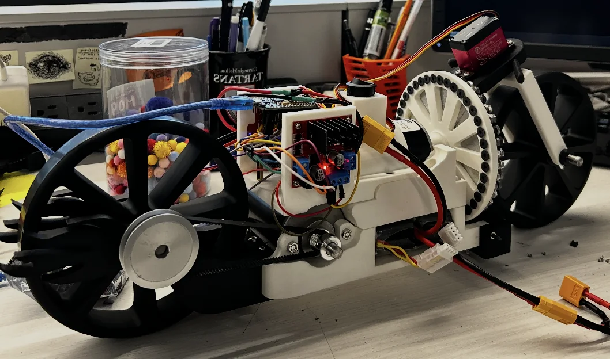
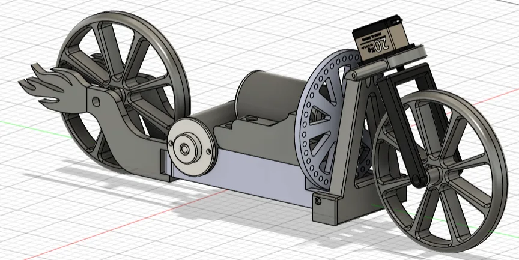
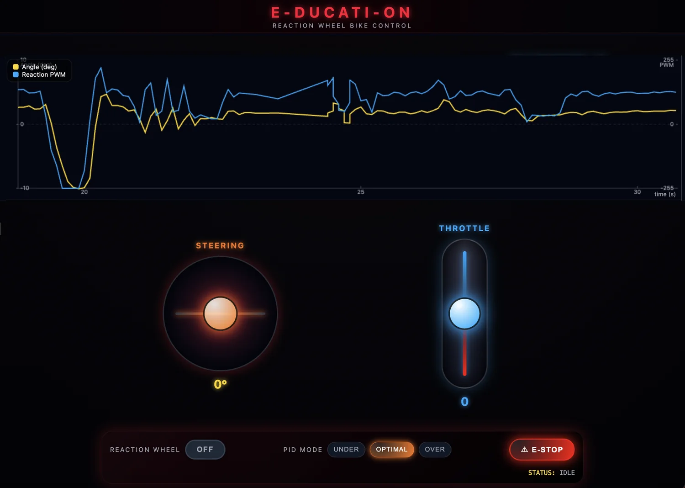
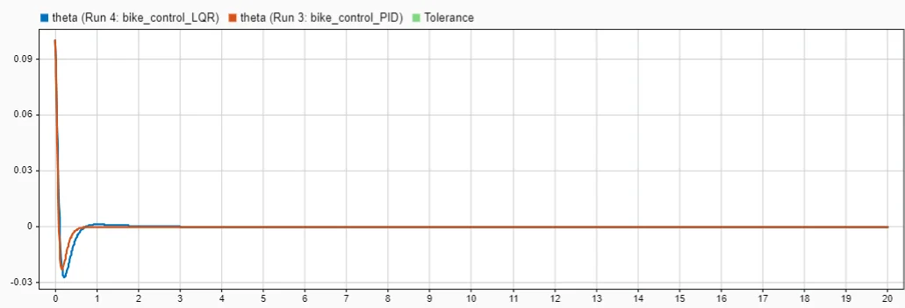

Feedback control · Embedded systems · Carnegie Mellon University
E-Ducati-On: Self-balancing motorcycle
A modifiable two-wheeled teaching platform that balances in roll using IMU feedback and an actively driven reaction wheel.
My focus: the embedded PD stabilizer, 100 Hz IMU/control integration, and practical compensation for motor friction and reaction-wheel saturation.

Onboard inertial sensing and roll-control update rate
Reported roll-disturbance recovery demonstrated on hardware
Static balancing and low-speed driving demonstrated
Balance remained limited by actuator torque, wheel saturation, and noise; the prototype did not achieve sustained unlimited balancing or high-speed maneuvers.
Introduction
The challenge
Two-wheeled motorcycles are unstable at rest, and passive stability from forward motion cannot be relied upon at very low speeds. We built E-Ducati-On as a low-cost, open and modifiable learning platform to expose the sensing, actuation, and feedback control required for lateral balance.
Our objective was to stabilize roll using a reaction wheel, then test whether the robot could remain upright while stationary or driving slowly. The broader value is a hands-on platform for teaching control systems that students can inspect, tune, and extend instead of treating as a closed black box.

Design
My contributions
I worked on the embedded feedback controller and hardware integration: reading inertial measurements, estimating roll motion, commanding corrective reaction-wheel actuation, and making the baseline controller usable under real motor constraints.
I implemented the roll-control loop and its actuator compensation and integrated the MPU-6050, ESP8266, and motor controller. The chassis, motor selection, steering mechanism, and user-facing interface were developed as part of the team's broader mechanical and electrical system.
Feedback loop
Read MPU-6050 inertial data at 100 Hz through I²C.
Filter IMU measurements to obtain a roll-angle and angular-rate estimate.
Use a PD law to request reaction-wheel torque opposing the measured roll error.
Account for friction, speed saturation, and low-motion behavior before commanding the motor.
Handling real actuator behavior
- Velocity desaturation: bias the reference roll angle within a safe range as flywheel speed rises, giving gravity a way to oppose stored wheel momentum.
- Static-friction compensation: apply a small zero-crossing boost when the motor would otherwise stall near reversal or low speed.
- Idle braking: limit unnecessary motor activity when roll angle and roll rate are near zero.
- Sensor zeroing: estimate the inertial sensor's startup offset so the controller aims at the physical upright position.
These controls illustrate why a stable simulation does not guarantee stable embedded hardware: the motor has a finite speed and torque range, the IMU is noisy, and the control code must respond to both.


Evaluation
What the tests showed
The team used MATLAB/Simulink for preliminary dynamics and controller studies, then evaluated the finished hardware with static balancing, low-speed driving, and small steering inputs. PID and LQR were compared in simulation, but the physical prototype used the augmented PD controller.
- Static balance: the motorcycle remained upright for several seconds under moderate gains, then could drift and tip as actuator limits or disturbances accumulated.
- Disturbance recovery: hardware demonstrations included recovery from approximately 5–10° roll perturbations (as recorded in my resume).
- Low-speed driving: lateral stabilization was demonstrated while the vehicle moved forward slowly; smooth surfaces and light steering were the more favorable conditions.
- Controller limits: higher proportional gains produced oscillation; IMU noise, friction, and reaction-wheel speed constraints limited performance.

The reaction-wheel motor had limited corrective authority and could saturate. Wi-Fi latency also made remote tuning less reliable. Aggressive steering and wheelie maneuvers were not validated on the physical motorcycle; wheelie control remained a simulation study.